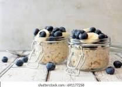

Basic Overnight Oats
This Overnight Oats recipe makes for a great breakfast on its own, and is a great base for any flavor variation.
Serves 1
Base Ingredients
- 1/2 c old fashioned rolled oats
- 1/2 c milk of choice
- 1/4 plain or vanilla greek yogurt
- 1-2 tsp maple syrup or honey (other sweetener substitutes okay)
- Optional: 1 tsp chia seeds
- Optional: 1/2 tsp vanilla extract
- Optional: dried fruit, nuts & seeds
Topping Variations
Chocolate PB...
- 2 tbsp chocolate chips or chunks
- 1 tbsp peanut butter
Berrylicious..
- 1/4 c fresh berries
- 1 tbsp jam (such as strawberry chia)

Steps
- Combine: Measure out all base ingredients into a lidded container and stir until combined.
- Store: Seal jar and place in refrigerator overnight (or at least 2-4hrs).
- Serve: Once cooled, remove from fridge and stir to loosen. If mixture is too thick, add milk one teaspoon at a time. (Optional: get creative! Garnish with toppings of choice--see "variations" for topping ideas.)
Adapted from Brittany Mullins' recipe on the eating bird food blog.